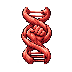
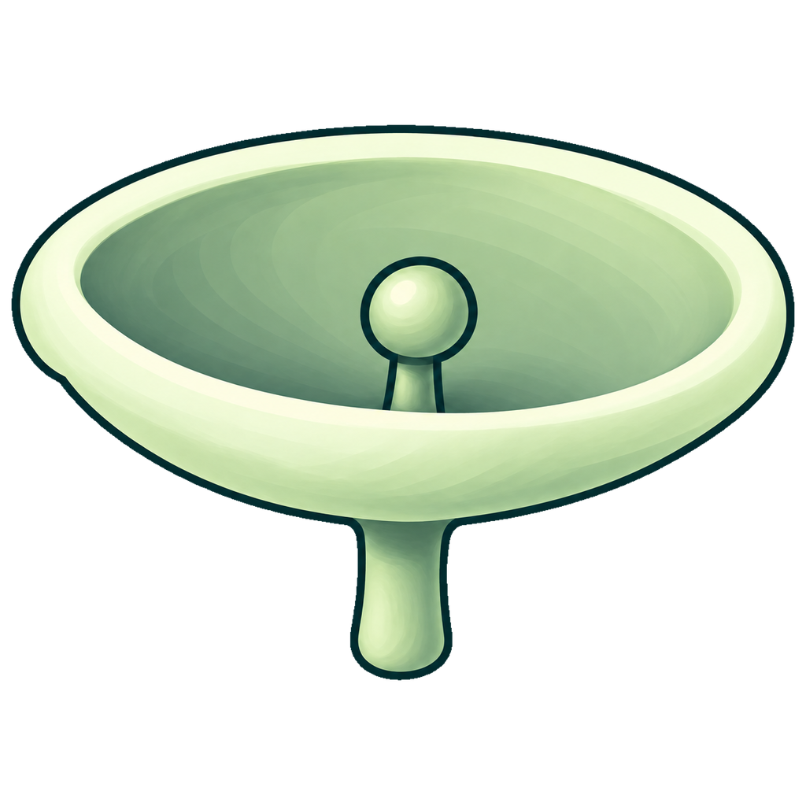
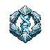
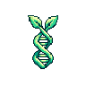

핵심
방향
- 속성을 조합해 유닛 템플릿을 만들고 군락을 번성시키는 전략 게임이다.
- 첫 화면은 개체 없이 둥지만 있으며 첫 생명체부터 직접 설계한다.
- 이름 붙인 설계로 개체를 탄생시키고 채집·운반·방어를 관찰한다.
- 개체 생산과 둥지 성장에 진화 포인트를 나눠 쓴다.
- 군락과 월드의 시뮬레이션은 브라우저 클라이언트에서 실행한다.
맵 디자인
- 320×320칸에 동급 둥지 후보 12곳을 두고 생활권·노이즈를 합성한다.
- 숨은 후보는 생성에만 쓰며, 개체는 발견한 먹이·지형으로 판단한다.
- 둥지 주변 반경 약22칸에 시작 먹이 약300개를 분산하며 총량은 시드에 따라 변한다.
- 먹이1개는 진화1점이며, 시작 먹이는 지점당 최대10개를 배치한다.
- 총량·반경·상한은 조정값이며, 15개 상한은 비교용이다.
둥지 주변의 시작 먹이
코덱스
속성
| 속성 | 효과 | 설명 | 중첩 | 관련 시너지 |
|---|---|---|---|---|
 | 운반량 +2개 | 한 번에 운반할 수 있는 먹이의 양을 늘립니다. | 장착 1개마다 운반량 +2개 누적 | 과적 · 적재 가속 · 맥 짚기 · 충격 경화 |
| 이동 속도 +0.5칸/초 | 탐색과 왕복 이동을 빠르게 합니다. | 장착 1개마다 이동 속도 +0.5칸/초 누적 | 적재 가속 · 질주 · 탐색 파동 · 위험 가속 | |
 | 시야 반경 +2칸 | 군락과 공유하는 실제 시야를 넓힙니다. | 장착 1개마다 시야 반경 +2칸 누적 | 맥 짚기 · 탐색 파동 · 미지 감지 · 위험 예감 |
 | 환경 피해 25% 감소 | 환경 피해를 곱셈으로 줄입니다. 두 개 장착하면 43.75% 감소합니다. | 장착 1개마다 환경 피해 25% 감소 누적 | 충격 경화 · 위험 가속 · 위험 예감 · 환경 적응 |


조합 시너지
| 구성 속성 | 시너지 | 효과 |
|---|---|---|
힘 + 힘 | 과적 | 기본 운반량을 넘겨 먹이 4개를 추가로 적재합니다. 초과 적재 중 이동 속도는 20% 감소합니다. 운반량 +2개 · 운반량 +2개 |
힘 + 이동 | 적재 가속 | 적재율에 비례해 이동 속도가 최대 50% 증가합니다. 운반량 +2개 · 이동 속도 +0.5칸/초 |
힘 + 감각 | 맥 짚기 | 현장 준비 후 먹이 2개를 즉시 담습니다. 같은 먹이 더미에 개체별 30초 간격으로 발동합니다. 운반량 +2개 · 시야 반경 +2칸 |
힘 + 저항 | 충격 경화 | 피격 직후 피해 4를 흡수하는 보호막이 4초간 생깁니다. 재사용 대기시간은 12초입니다. 운반량 +2개 · 환경 피해 25% 감소 |
이동 + 이동 | 질주 | 직선으로 4칸 이동하면 이동 속도가 75% 증가합니다. 정지하거나 방향을 바꾸면 해제됩니다. 이동 속도 +0.5칸/초 · 이동 속도 +0.5칸/초 |
이동 + 감각 | 탐색 파동 | 8칸 이동할 때마다 1초간 시야 반경이 4칸 넓어집니다. 이동 속도 +0.5칸/초 · 시야 반경 +2칸 |
이동 + 저항 | 위험 가속 | 위험 지형 안에서 이동 속도가 3배가 됩니다. 위험 지형의 기본 감속은 함께 적용됩니다. 이동 속도 +0.5칸/초 · 환경 피해 25% 감소 |
감각 + 감각 | 미지 감지 | 반경 18칸 안개 속 미확인 대상에 느낌표를 표시합니다. 정체와 수량은 실제 시야로 확인합니다. 시야 반경 +2칸 · 시야 반경 +2칸 |
감각 + 저항 | 위험 예감 | 위험 지역 진입 시 1초간 환경 피해를 막습니다. 재사용 대기시간은 15초입니다. 시야 반경 +2칸 · 환경 피해 25% 감소 |
저항 + 저항 | 환경 적응 | 같은 환경 위험에 1초 노출되면 해당 피해가 90% 추가 감소합니다. 위험을 벗어난 뒤 5초가 지나면 해제됩니다. 환경 피해 25% 감소 · 환경 피해 25% 감소 |
둥지 성장


속성 슬롯 +1칸 · 진화 포인트 보관량 ×5
둥지는 1~4레벨이며 성장할 때마다 속성 슬롯 1칸과 진화 포인트 보관량이 늘어납니다.
| 레벨 | 유닛 속성 슬롯 | 속성 종류(목표) | 진화 포인트 보관량 | 진화 포인트 다음 성장 비용 |
|---|---|---|---|---|
| Lv.1 | 2칸 | 4종 | 100 | 80 |
| Lv.2 | 3칸 | 6종 | 500 | 400 |
| Lv.3 | 4칸 | 8종 | 2,500 | 2,000 |
| Lv.4 | 5칸 | 10종 | 12,500 | — |
최고 둥지 레벨 · Lv.4